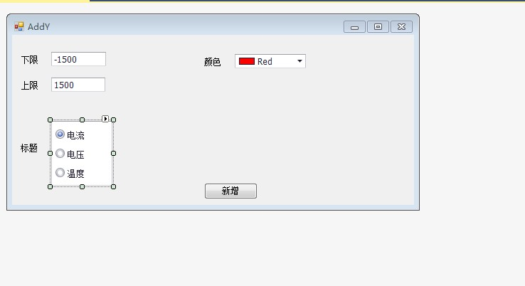
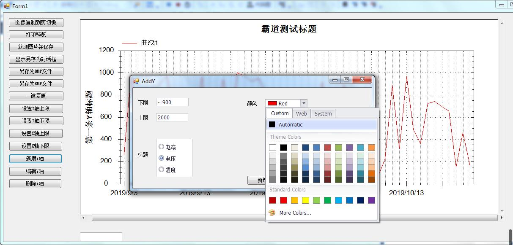
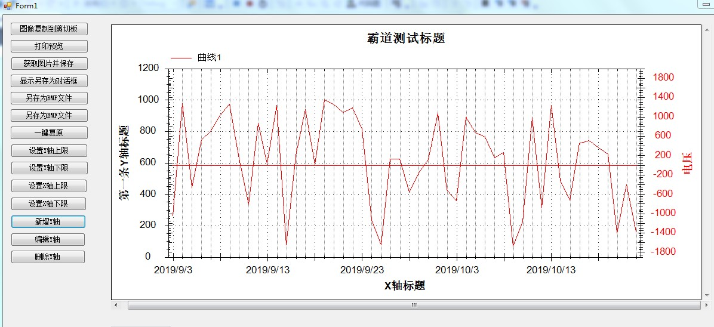
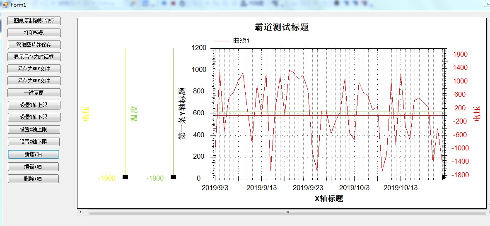

Winform中实现ZedGraph的多条Y轴(附源码下载)：
https://blog.csdn.net/BADAO_LIUMANG_QIZHI/article/details/100132245
在上面实现显示多条自定义Y轴的效果上，改进实现自定义新增Y轴功能。
关注公众号
霸道的程序猿
获取编程相关电子书、教程推送与免费下载。
示例代码下载
https://download.csdn.net/download/badao_liumang_qizhi/11653210
主窗体添加按钮，点击之后弹出Y轴设置界面。
private void button12_Click(object sender, EventArgs e)
{
addY = new AddY();
addY.Show();
}
其中addY是对应要弹窗显示的窗体对象，其设计如下

此窗体有两个EditText，用来存储Y轴的上下限，然后使用RadioGroup用来设置标题的选择，然后使用
ColorEditPicker进行颜色的选择，以上的控件都是使用的DevExpress的控件。
在点击新增按钮时将控件上的所有属性赋值给声明的YAxis对象。
private void button1_Click(object sender, EventArgs e)
{
YAxis y = new YAxis();
//标题
y.Title.Text = this.radioGroup1.Text;
//颜色
y.Color = this.colorPickEdit1.Color;
//下限
y.Scale.Min = Double.Parse(this.textEdit1.Text);
//上限
y.Scale.Max = Double.Parse(this.textEdit2.Text);
if (setYaxisEvent != null)
{
setYaxisEvent(y);
}
}
这里使用的是事件与委托进行跨窗体传递对象。
在AddY当前页面代码中
//委托的定义
public delegate void SetYaxisDelegete(YAxis s);
//事件声明
public static event SetYaxisDelegete setYaxisEvent;
然后在主页面Form1中的初始化方法中进行委托的订阅
//添加Y轴
AddY.setYaxisEvent += new AddY.SetYaxisDelegete(addYaxis);
此时传递了addYaxis方法名
方法代码：
public void addYaxis(YAxis y)
{
//如果是新增第二条Y轴
if (ycount == 1)
{
//第二条Y轴标题
myPane.Y2Axis.Title.Text = y.Title.Text.ToString();
//第二条Y轴下限
myPane.Y2Axis.Scale.Min = y.Scale.Min;
//第二条Y轴上限
myPane.Y2Axis.Scale.Max = y.Scale.Max;
//设置颜色
myPane.Y2Axis.Color = y.Color;
//设置刻度线字体颜色
myPane.Y2Axis.Scale.FontSpec.FontColor = y.Color;
//设置标题字体颜色
myPane.Y2Axis.Title.FontSpec.FontColor = y.Color;
//让第二条Y轴显示
myPane.Y2Axis.IsVisible = true;
ycount++;
//关闭窗口
addY.Close();
zedGraphControl1.Invalidate();
}
//否则就是新增第三条及以上
else
{
//int yIndex = myPane.YAxisList.Count+1;
// 创建第yIndex条Y轴
YAxis yAxisNew = new YAxis(y.Title.Text.ToString());
yAxisNew.Scale.Min = y.Scale.Min;
yAxisNew.Scale.Max = y.Scale.Max;
//设置Y轴颜色
yAxisNew.Color = y.Color;
//设置刻度线字体颜色
yAxisNew.Scale.FontSpec.FontColor = y.Color;
//设置标题字体颜色
yAxisNew.Title.FontSpec.FontColor = y.Color;
//yAxisNew.Type = AxisType.Text;
//显示小刻度 是false则看不到效果
//yAxisNew.MinorGrid.IsVisible = true;
// turn off the opposite tics so the Y2 tics don't show up on the Y axis
//关闭相反的tics，使y2 tics不会显示在y轴上
yAxisNew.MajorTic.IsInside = true;
yAxisNew.MinorTic.IsInside = true;
yAxisNew.MajorTic.IsOpposite = true;
yAxisNew.MinorTic.IsOpposite = true;
// Align the Y2 axis labels so they are flush to the axis
//对齐Y2轴标签，使其与轴平齐
//yAxisNew.Scale.Align = AlignP.Inside;
//添加到Y轴的list
myPane.YAxisList.Add(yAxisNew);
//关闭窗口
addY.Close();
zedGraphControl1.Invalidate();
}
}


